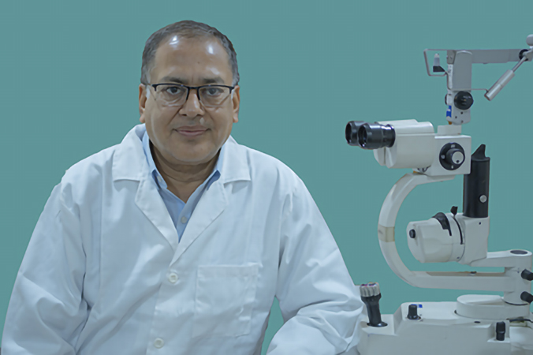
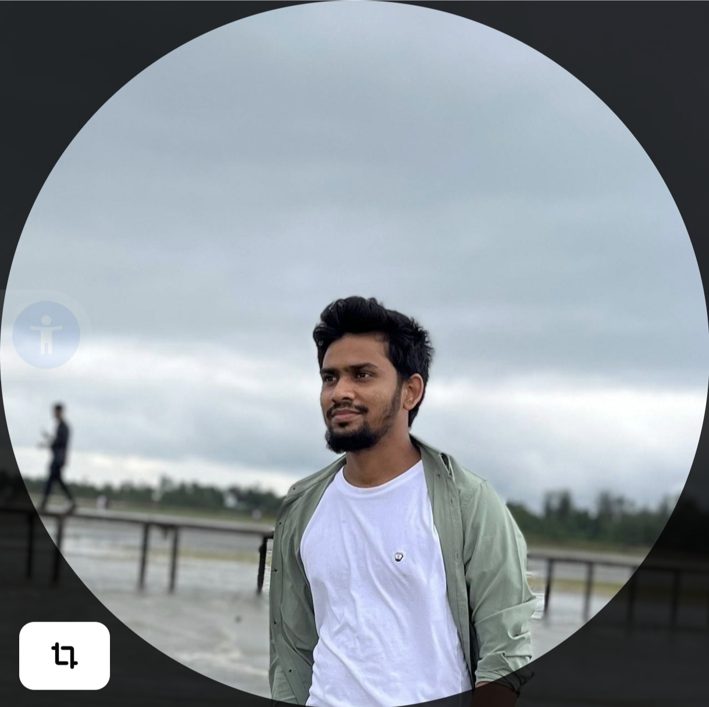

Prof. Dr. Iftekhar Md. Munir
Consultant Glaucoma & Phaco Specialist
Get AppointmentProf. Dr. Iftekhar Md. Munir is an energetic & enthusiastic Glaucoma Specialist & Phaco surgeon of Bangladesh Eye Hospital, Malibagh branch. He was working as Professor of Glaucoma at National Institute of ophthalmology (NIO) which is a 250 bed eye subspecialty based apex hospital in public sector, at Dhaka, Bangladesh. He utilizes the latest techniques and equipment to ensure that he brings the highest standards of care. He is one of the leading cataract and glaucoma surgeon of Bangladesh. Doing phacoemulsification from 2000 in the country and has performed high volume Phaco Surgeries with excellent results. He is the pioneer of glaucoma surgery -Trabeculectomy with MMC and Ologen, Ahmed Glaucoma Valve and other GDD implants in Bangladesh. He also perform laser glaucoma surgery-LPI, SLT.
Prof. Dr. Iftekhar Md. Munir is also active in research & published more than 30 papers in local & foreign journals. He regularly attends/presents at various eye conferences at home & abroad.
Prof. Dr. Iftekhar Md. Munir received Professor Mubarak Ali Award as recognition of his works on glaucoma by Ophthalmological Society of Bangladesh (OSB) in 2013.
Prof. Dr. Iftekhar Md. Munir received Professor Saidur Rahman Award as a recognition of his works in Ophthalmology by Bangladesh community Ophthalmological Society (BCOS) in 2018.
Prof. Dr. Iftekhar Md. Munir received the distinguished service award for his services in Bangladesh from the Asia Pacific Academy of Ophthalmology (APAO) in 2024.
Education